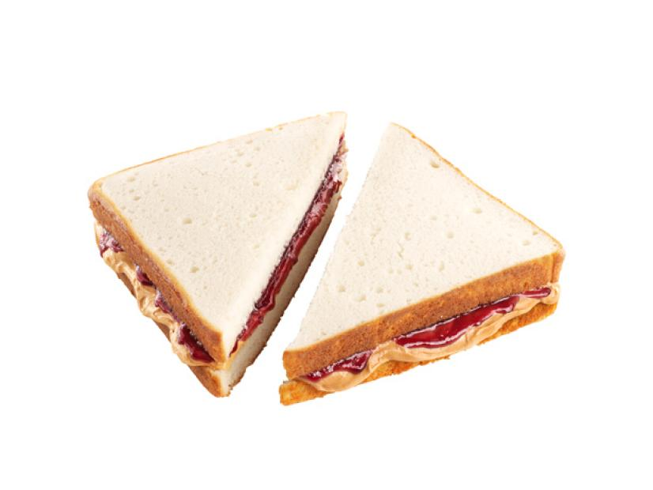

Peanut Butter and Jelly Recipe

The Most Difficult Dish in the World
Are you ready to earn your first Michelin Star? This dish transcends all cultures and tastes buds. The ultimate sandwich.
- 16 ounces of lasagna noodles
- 1 lb of lean ground beef
- salt and pepper to taste
- 16 ounces of spaghetti sauce
- 1 clove of minced garlic
- 1/2 lb of shredded mozarella cheese
- 1/2 lb of shredded cheddar cheese
- 1 pint of ricotta cheese
- Bring a large port of lightly salted water to a boil. Add pasta and cook for 8-10 minutes. Drain water afterwards.
- Preheat oven to 350 degrees F (175 degrees C). In a large skillet over medium-high heat, brown beef and season with salt and pepper: drain. Stir in spaghettic sauce iand garlic and simmer 5 minutes.
- In a medium bowl, combine mozzarella, cheddarr and ricotta: stir well. In 9 x 13 inch pan, alternate layers of noodles, meat mixutre, and cheese mixture until pn is filled.
- Bake in peheated oven for 30 minutes, or until cheese is melted.